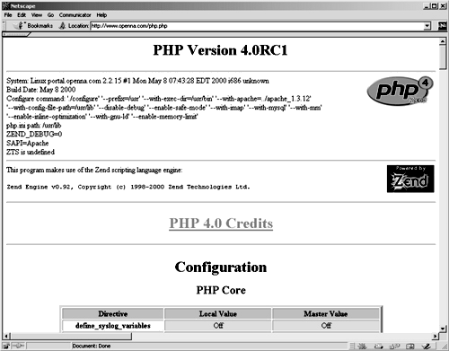

| Securing and Optimizing Linux: RedHat Edition -A Hands on Guide | ||
|---|---|---|
| Prev | Chapter 29. Software -Network Server, web/Apache | Next |
If you intend to use PHP4 server-side scripting language support with your Apache web server don't forget to include in your /etc/httpd/conf/httpd.conf file the following lines to enable this feature:
Edit the httpd.conf file, vi /etc/httpd/conf/httpd.conf, and add the following lines between the section tags <IfModule mod_mime.c> and </IfModule>:
AddType application/x-httpd-php .php
AddType application/x-httpd-php .php3
AddType application/x-httpd-php-source .phps
|
You must restart the Apache web server for the changes to take effect, using the following commands:
[root@deep ]/# /etc/rc.d/init.d/httpd restart
|
Shutting down http: [ OK ]
Starting httpd: [ OK ]
|
Once the above lines have been included in our httpd.conf file, we must test the new PHP4 feature to be sure it's working. We'll create a small PHP file named php.php in our DocumentRoot, and then point our web broswer to this PHP document to see if PHP4 work on the server. Create the php.php file in your DocumentRoot, touch /home/httpd/ona/php.php and add the following lines in the PHP file:
<body bgcolor="#FFFFFF">
<?php phpinfo()?>
</body>
|
Now, point your web browser to the following address:http://my-web-server/php.php The <my-web-server> is the address where your Apache web server resides, and <php.php> is the PHP document we have created above to display the information and configuration of our Linux server.

If you see something like the above page appearing in your web browser congratulations! Your PHP module is working.